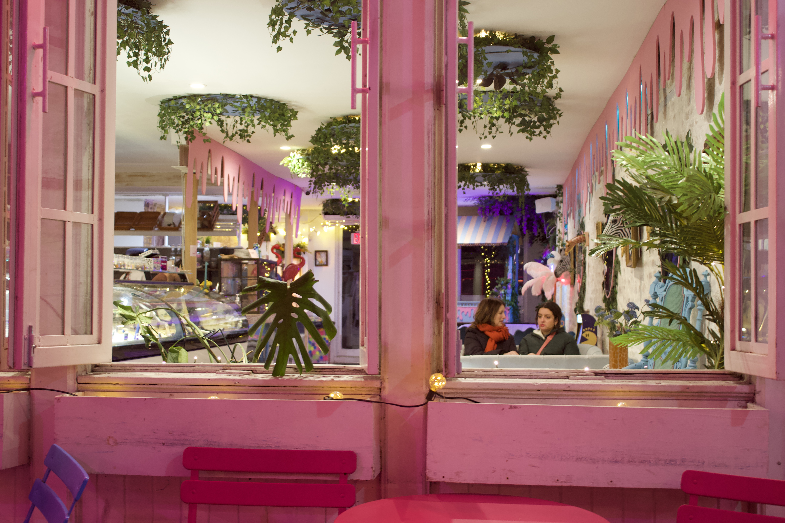
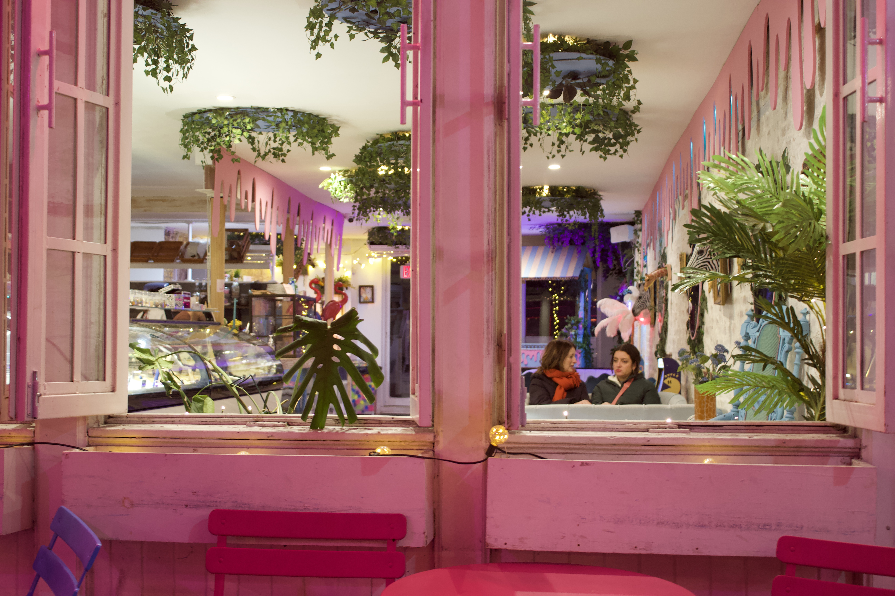

why i create
i can write, but i can hardly paint. i can also take pictures. i wonder where all art comes from. i wonder if all the beauty, meaning, and filth of it lives within me, or perhaps my art is my reaction the world, choosing to manifest in words rather than paint, or sometimes photographs. it may very well be the latter, because when i look at my work, i am rarely able to answer the why of it. it is more likely that i just felt a hollow in the shape of a mute emotion, and i saw to fill it with something. whether the result is to be considered art or not is purely subjective. i create, or at least try to create, something fine, something bigger and better than me, and something that justifies my trials and indiscretions.
"perhaps the greatness of art lies in the perpetual tension between beauty and pain, the love of men and the madness of creation, unbearable solitude and the exhausting crowd, rejection and consent… On the ridge where the great artist moves forward, every step is an adventure, an extreme risk. In that risk, however, and only there, lies the freedom of art." -- albert camus


 
